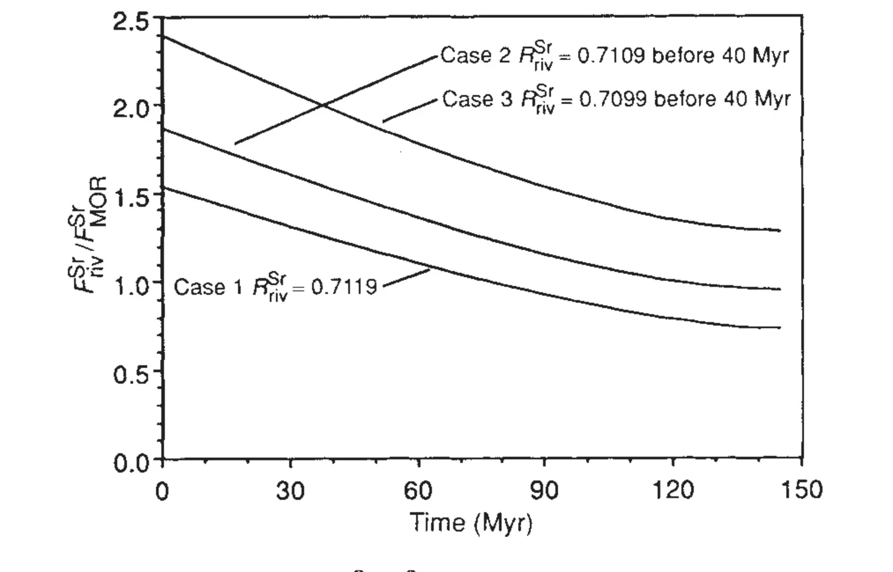

Enhanced Cenozoic chemical weathering and the subduction of pelagic carbonate
Key finding. Sustained enhancement of chemical weathering in the late Cenozoic requires an increased flux of CO2 to the atmosphere, and the shift since the Jurassic from primarily cratonic to primarily pelagic carbonate accumulation supplies one — because sea-floor spreading carries pelagic carbonate into subduction zones, where metamorphism returns its carbon to the atmosphere.

What question did this research address?
Rising oceanic strontium isotope ratios through the late Cenozoic led Raymo and colleagues to propose that chemical weathering rates increased, driven by the uplift of the Himalaya and the Andes exposing fresh rock.
But weathering consumes atmospheric carbon dioxide, and over timescales beyond about a million years it can only proceed as fast as carbon dioxide is resupplied. Sustained higher weathering therefore demands a larger carbon dioxide source — or the carbon dioxide simply draws down and weathering returns to its former rate. This paper asked where that source could have come from.
What did we find?
The constraint is a matter of mass balance over long timescales. Silicate weathering consumes carbon dioxide, so on timescales long compared with the roughly 100,000-year residence time of carbon dioxide in the atmosphere and ocean, weathering can proceed only as fast as carbon dioxide is supplied.
Mountain uplift raises the weathering rate at a given atmospheric carbon dioxide concentration. But if weathering then outpaces the metamorphic and mantle supply, the carbon dioxide reservoirs draw down until weathering returns to its previous rate.
An elevated weathering rate sustained over millions of years therefore requires an increased magmatic or metamorphic source of carbon dioxide, not merely more exposed rock.
Since the Jurassic, carbonate has accumulated primarily in pelagic rather than cratonic environments — on the deep sea floor rather than on continental shelves.
That relocation matters because sea-floor spreading transports pelagic carbonate to subduction zones and recycles it through metamorphic environments, whereas carbonate on continents stays put. The shift therefore supplies the increased carbon dioxide flux the weathering hypothesis needs.
Why does it matter?
It supplies the missing half of a well-known argument. Uplift explains how rock could weather faster; it does not explain where the carbon dioxide to sustain that weathering came from, and without an answer the original hypothesis is not self-consistent over millions of years.
The proposed answer connects the carbon cycle to plate tectonics through the *location* of carbonate deposition rather than its amount — a change in where the ocean puts its carbonate becomes a change in how much carbon dioxide returns to the air.
It also illustrates a constraint that recurs throughout long-term carbon cycle work: a sustained change in a sink requires a matching change in a source, so any proposal that alters one has to account for the other.
Citation, data, and code
Ken Caldeira (1992). Enhanced Cenozoic chemical weathering and the subduction of pelagic carbonate. Nature 357, 578-581.
Related
- How long does a carbon dioxide emission go on warming the planet?
- What does the deep-time record reveal about how the Earth system behaves?
- The role of terrestrial plants in limiting atmospheric CO2 decline over the past 24 million years (Pagani et al., 2009)
- Carbonate deposition, climate stability, and Neoproterozoic ice ages (Ridgwell et al., 2003)
- The life span of the biosphere revisited (Caldeira and Kasting, 1992)